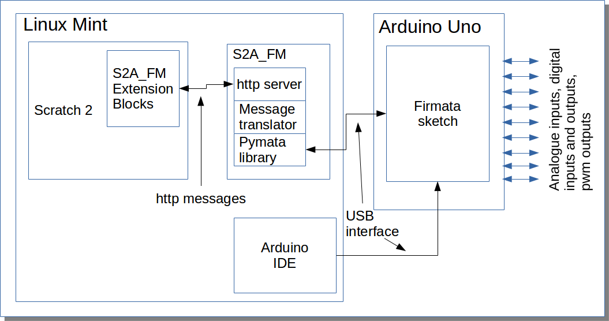
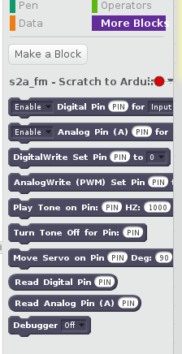
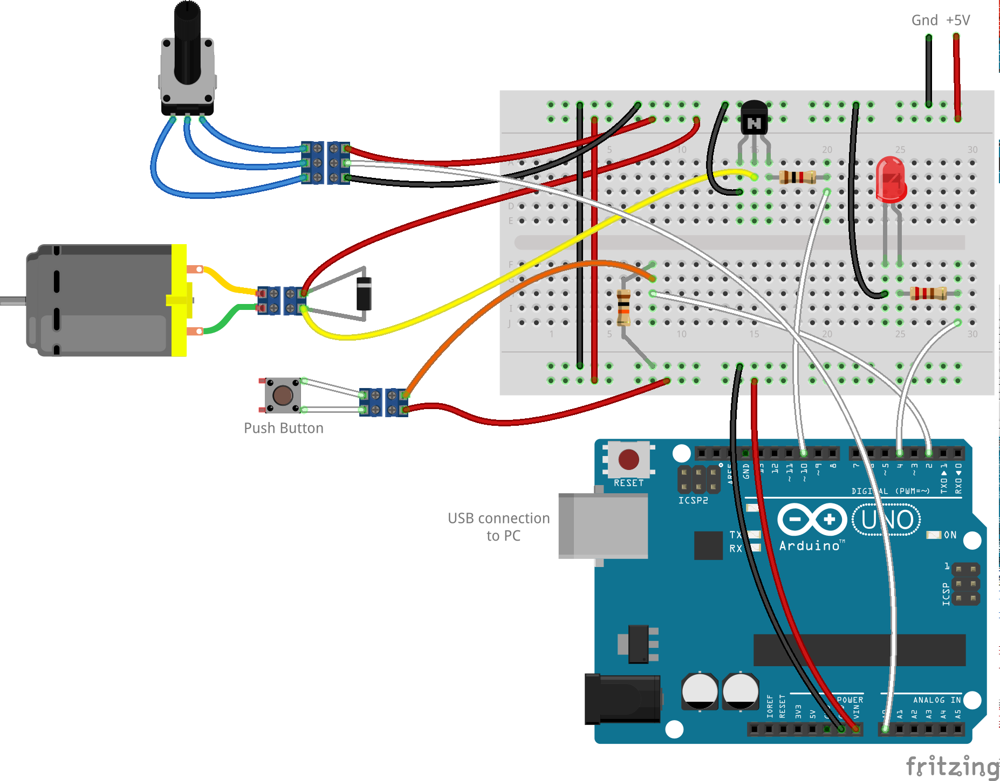
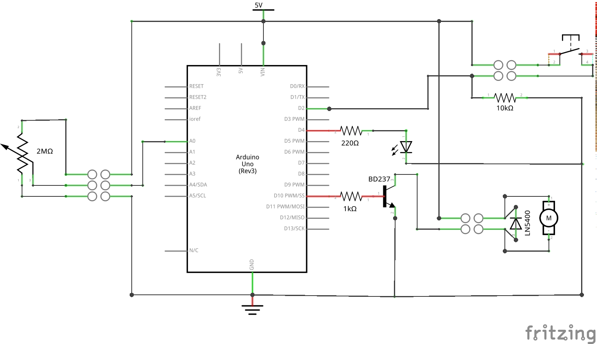
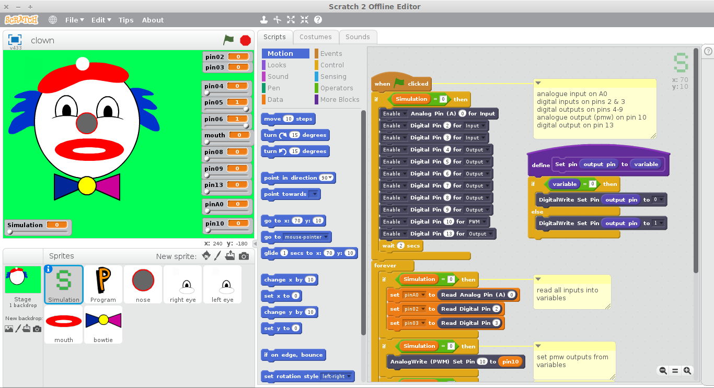
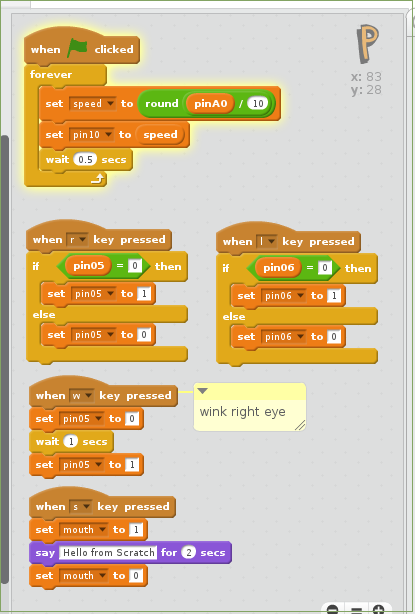
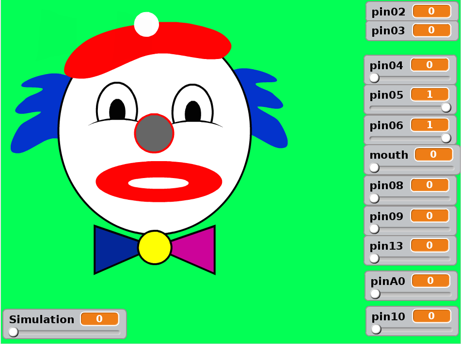

The IET workshop on 'control' uses a software product produced by Matrix, called CoCo, and a 'Control and Data Interface' box from Deltronics. The CoCo environment is supplied with a number of simulations, such as the clown, the house and the traffic lights as used in the Control Workshop, along with physical models that plug into the Deltronics box. However, Matrix has moved on and now produce a programming environent called Flowcode, no longer supporting the CoCo environment. Meanwhile, schools are starting to use the Scratch language, developed by MIT. Also, the Barefoot Computing Project, funded by the Department of Education in partnership with Computing at Schools and BT, have provided resources (including many examples in Scratch) to support the new Computer Science element of the National Curriculum for Key Stages 2 and 3.
Although CoCo is still a viable product to use for the Control Workshop, it seems prudent to explore alternatives that are based around Scratch. A number of physical interfaces to Scratch are already available:
The original version of Scratch was written in the object-oriented language Smalltalk. Version 2.0 (http://wiki.scratch.mit.edu/wiki/Scratch_2.0), however, has been completely re-written in Adobe ActionScript, the language used for writing Flash applications. Scratch 2 runs online in a browser (with a Flash plug-in), although there is a beta version of an offline editor that can be installed on a PC, provided that Adobe Air is installed. Air is available for Windows and Mac, but only an old version is availble for Linux.
However, Scratch 2 allows 'extension blocks' to be added. The online version currently only provides Picoboard and Lego WeDo extensions. However, you can define your own extension blocks and load them into the offline editor, save the project and open it in the online editor, although you would need to provide an application outside Scratch that supported the blocks. s2a_fm has defined its own extension blocks (which you can modify) and provides a base Scratch project that you can open in either the online or offline editors. Extension blocks simply send an http message, containing the parameters specified, to a defined port and may receive a reply and put values into Scratch variables. The purpose of the plug-ins is to receive the messages and provide replies, doing whatever processing is required in between.
Our requirements can be summarised as:
The future of computer programming at primary school level is likely to revolve around the use of Scratch. Not only is it free and supported by MIT, but there is a world-wide user community.
The Arduino microcontroller would appear to be a good platform for an interface to the physical wolrd. It is relatively cheap, is available in a number of versions (as well as clones) and requires minimal external circuitry. Its use would also remove dependence on a commercial organisation who might withdraw support.
From the above list of available interfaces, the s2a_fm Scratch 2 extension seems to provide the best fit to our requirements. It makes use of an existing sketch (program) for the Arduino (Firmata) that is used to allow programs running on a PC to control the I/O channels on the Arduino. There are also open-source libraries available that implement the Firmata communications protocol. s2a_fm uses one of those libraries, together with a simple http server and a module to translate back and forth between the Scratch messages and the Firmata messages. The three modules that make up s2a_fm are written in Python, which is an interpreted language available on most platforms.
The rest of this note describes a simple demonstrator that has been set up using Scratch 2, s2a_fm and an Arduino microcontroller.
The demonstrator was produced using a laptop running Linux Mint and an Arduino Uno microcontroller. The block diagram shows the main components. The Scratch 2 extension blocks are defined in a simple text file provided with s2a_fm.
The three s2a_fm modules are downloaded from the github link above and installed, following the instructions in s2a_fm_manual.pdf. The Firmata sketch is uploaded from the Arduino IDE (from the sketches supplied with the IDE) and s2a_fm started as described in the manual. Scratch 2 is then started and the base project opened from the s2a_fm projects directory.
These are the blocks added by s2a_fm. Digital pins can be enabled as inputs, outputs, for pulse width modulation (PWM - the way that an Arduino provides analogue outputs), as a tone generator and to drive a servo motor. As well as blocks for reading and writing digital and analogue signals, there are also blocks to output a frequency (for tone generation) and to set the position of a servo.
The PIN parameter can be entered as a number or you can drop a Scratch data variable on to the parameter.
For the purpose of the demonstrator, one of each type of input and output required for the workshop was wired to the Arduino (plus a potentiometer to provide an analogue input). Using a 5V supply to both the board and the Arduino, the following devices were attached:
The schematic for this arrangement is shown below.
 With this arrangement it is possible to define a number of data variables and write a script to set Arduino outputs from the value of variables and variables from Arduino inputs. We can then build a simplified clown's face, with each sprite driven by the value of one data variable. The simulation (this link between variables and real I/O) can be turned on or off using another variable.
Notice that variables can be renamed at any time, for example that used for the mouth. Changing teh value of a variable simply switches from one sprite costume to another. Also, the script with the purple header is a custom block that is used several times within the main script (essentially a subroutine).
Although the sprites used to build the simulation cannot be hidden and they can be moved around within the editor, Scratch can be switched to full screen mode where the sprites are locked. The variables can be shown (as in the screen image) or hidden.
In this demonstrator students write their scripts (code) within the P sprite, reading data variables (set by inputs from the Arduino via the simulation) that can be used to make decisions in their code and setting data variables to cause outputs on the Arduino to be driven. The examples here include:
The 'say' block displays text in a bubble. However, for some reason the bubble is not appearing in this demonstrator. Scratch allows sounds to be played, including recored sounds, but will not play speach from text.
This demonstrator goes some way to meeting the requirements listed above and shows that options are available as alternatives to the CoCo/Deltronics platform. As noted earlier, this demonstrator used Linux Mint. The installation steps required to make it work on Windows 8.1 are described in another project page.
© David James 2015 Last updated: 3rd June 2015